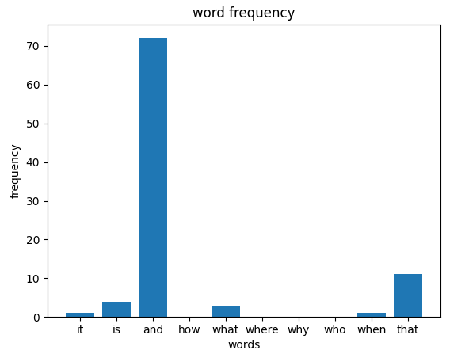

Here is a bar graph made from the word frequencies. To get this graph, I first read in a piece of text into thonny. Then, I used the list of ten common words and compared them to the piece of text using a counter and for loops. After that, I used this list of the frequencies along with the list of common words to make a bar graph.
You can see that "and" is used very frequently in the article whereas "how" and "why" are not.